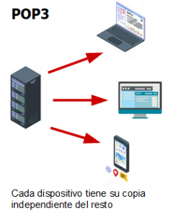

POP3
Es un protocolo estándar de Internet que permite a los clientes de correo electrónico recuperar mensajes desde un servidor remoto y descargarlos a dispositivos locales, facilitando la gestión de correos electrónicos fuera del servidor central, comúnmente utilizado para almacenar temporalmente los correos electrónicos en dispositivos personales.
